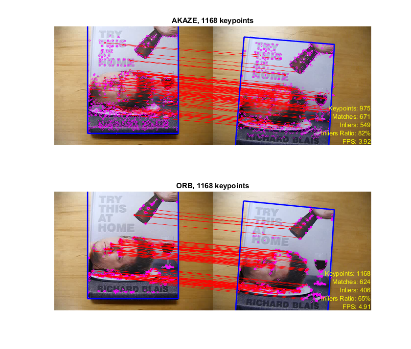

Contents
AKAZE and ORB planar tracking
In this demo, we will compare AKAZE and ORB local features by using them to find matches between video frames and track object movements.
The algorithm is as follows: First, we detect and describe keypoints on the first frame inside a manually set object boundaries. For every next frame:
- Detect and describe keypoints
- Match them using bruteforce matcher
- Estimate homography transformation using RANSAC
- Filter inliers from all the matches
- Apply homography transformation to the bounding box to find the object
- Draw bounding box and inliers, compute inlier ratio as evaluation metric
To do the tracking we need a video and object position on the first frame. You can download an example video and data from here.
To run the sample, you specify an input (video file or camera id), then select a bounding box with the mouse, to start tracking.
Example video: http://www.youtube.com/watch?v=pzVbhxx6aog.
Sources:
function varargout = planar_tracker_demo(fname) % initialize app state and options app = defaultOptions(); % load video if nargin < 1 fname = fullfile(mexopencv.root(), 'test', 'blais.mp4'); win = [136 0 366 433]; % book %win = [135 165 285 175]; % face if exist(fname, 'file') ~= 2 error('Missing "blais.mp4" video, download it from here: %s', ... 'https://docs.google.com/file/d/0B72G7D4snftJandBb0taLVJHMFk') end else win = []; end vid = cv.VideoCapture(fname); assert(vid.isOpened(), 'Failed to open video'); % get first frame frame = vid.read(); assert(~isempty(frame), 'Failed to read frames'); % prompt user for an object ROI if isempty(win) win = selectROI(frame) assert(~isempty(win), 'No object specified'); end % store first frame and bounding box points app.sz = size(frame); app.frame0 = frame; app.bb0 = bsxfun(@plus, win(1:2), [0 0; win(3) 0; win(3:4); 0 win(4)]); % create feature detectors and descriptor matchers objects %names = {'AKAZE', 'KAZE', 'ORB', 'BRISK', 'SIFT', 'SURF'}; names = {'AKAZE', 'ORB'}; f = createTrackers(app, names); % detect keypoints and compute descriptors in first frame (ROI region) for i=1:numel(f) if true && i>1 && strcmp(f(i).name, 'ORB') % to ensure detectors locate roughly same number of keypoints f(i).detector.MaxFeatures = f(1).stats(1); end [f(i).kp0, f(i).desc0, f(i).stats] = processFirstFrame(f(i), app); end stats = cat(1, f.stats); % prepare plot h = createUI(f, app); if nargout > 0, varargout{1} = h; end % main loop counter = 0; while ishghandle(h(1).img) % get next frame counter = counter + 1; frame = vid.read(); if isempty(frame), break; end if rem(counter, app.show_every_frame) > 0, continue; end for i=1:numel(f) % feature matching + homography to track object [out, bb, f(i).stats] = processFrame(f(i), app, frame); % check quality of match if all(f(i).stats(3:4) >= [app.min_inliers app.min_inliers_ratio]) lin_opts = {'LineWidth',2, 'LineStyle','-'}; else % uncertain: not enough matches and/or too many outliers lin_opts = {'LineWidth',0.5, 'LineStyle',':'}; end % show results set(h(i).txt, 'String',printStats(f(i).stats)); set(h(i).lin, 'XData',bb([1:end 1],1) + app.sz(2), ... 'YData',bb([1:end 1],2), lin_opts{:}); set(h(i).img, 'CData',out); end stats = stats + cat(1, f.stats); drawnow; end vid.release(); % show average stats stats = stats ./ (counter / app.show_every_frame); stats(:,1:3) = round(stats(:,1:3)); for i=1:numel(f) disp(['-- ' f(i).name ' --']); cellfun(@disp, printStats(stats(i,:))); end end
Helper functions
function app = defaultOptions() %DEFAULTOPTIONS Create default options structure app = struct(); app.akaze_thresh = 3e-4; % AKAZE threshold set to locate ~1000 keypoints app.ransac_thresh = 2.5; % RANSAC inlier threshold app.match_ratio = 0.8; % nearest-neighbour matching ratio app.min_inliers = 100; % minimal number of inliers to draw bounding box app.min_inliers_ratio = 0.2; % minimal inliers ratio to draw bounding box app.draw_top_matches = 100; % draw the top 50 matches only app.show_every_frame = 3; % display every 3 frames to maintain high fps end function win = selectROI(img) %SELECTROI Interactively select region with mouse hImg = imshow(img); axis on hRect = imrect(); win = wait(hRect); close(ancestor(hImg, 'Figure')); if ~isempty(win) win(1:2) = win(1:2) - 1; end end function f = createTrackers(app, names) %CREATETRACKERS Create detectors and matchers objects f = struct(); for i=1:numel(names) % create detector object f(i).name = names{i}; switch names{i} case 'AKAZE' f(i).detector = cv.AKAZE('Threshold',app.akaze_thresh); case 'KAZE' f(i).detector = cv.KAZE('Threshold',app.akaze_thresh); case 'ORB' f(i).detector = cv.ORB('MaxFeatures',1000); case 'BRISK' f(i).detector = cv.BRISK(); case 'SIFT' f(i).detector = cv.SIFT(); case 'SURF' f(i).detector = cv.SURF(); otherwise error('Unexpected detector type') end % create matcher object if true if false opts = {'CrossCheck',true}; else opts = {}; end f(i).matcher = cv.DescriptorMatcher('BFMatcher', ... 'NormType',f(i).detector.defaultNorm(), opts{:}); else f(i).matcher = cv.DescriptorMatcher('FlannBasedMatcher', ... 'Index',... {'LSH', 'TableNumber',6, 'KeySize',12, 'MultiProbeLevel',1}); end end end function h = createUI(f, app) %CREATEUI Creates the UI x = app.bb0([1:end 1], 1); y = app.bb0([1:end 1], 2); lin_opts = {'Color','b', 'LineWidth',2, 'LineStyle','-'}; % plot images, objects, and stats h = struct(); figure('Position',get(0, 'DefaultFigurePosition') .* [0.4 0.2 1.5 1.7]) for i=1:numel(f) subplot(numel(f),1,i) h(i).img = imshow([app.frame0, app.frame0]); line(x, y, lin_opts{:}) h(i).lin = line(x + app.sz(2), y, lin_opts{:}); h(i).txt = text(2*app.sz(2), app.sz(1), printStats(f(i).stats), ... 'Color','y', 'HorizontalAlignment','right', 'VerticalAlignment','bottom'); title(sprintf('%s, %d keypoints', f(i).name, f(i).stats(1))) end end function str = printStats(stats) %PRINTSTATS Pretty print matching statistics str = { sprintf('Keypoints: %d', stats(1)) sprintf('Matches: %d', stats(2)) sprintf('Inliers: %d', stats(3)) sprintf('Inliers Ratio: %.0f%%', stats(4)*100) sprintf('FPS: %.2f', stats(5)) }; end function [kp, desc, stats] = processFirstFrame(f, app) %PROCESSFIRSTFRAME Process first frame % init stats stats = [0, 0, 0, 0, 0]; % create ROI mask mask = zeros(app.sz(1:2), 'uint8'); mask = cv.fillPoly(mask, app.bb0, 'Color',255); tm = cv.TickMeter(); tm.start(); % detect and compute features of first frame in ROI region [kp, desc] = f.detector.detectAndCompute(app.frame0, 'Mask',mask); assert(~isempty(kp), 'No keypoints detected in first frame'); stats(1) = numel(kp); tm.stop(); stats(5) = 1 / tm.TimeSec; end function [out, bb1, stats] = processFrame(f, app, frame1) %PROCESSFRAME Process subsequent frames % initialize output out = [app.frame0, frame1]; bb1 = nan(size(app.bb0)); stats = [0 0 0 0 0]; tm = cv.TickMeter(); tm.start(); % detect and compute features in current frame [kp1, desc1] = f.detector.detectAndCompute(frame1); stats(1) = numel(kp1); if numel(kp1) < 2, return; end % match against first frame features if true % 2-NN matching with ratio test (if closest match is MATCH_RATIO % closer than the second closest one, then its a good match) matches = f.matcher.knnMatch(f.desc0, desc1, 2); idx = cellfun(@(m) numel(m) == 2 && ... (m(1).distance < app.match_ratio * m(2).distance), matches); matches = cellfun(@(m) m(1), matches(idx)); elseif false matches = f.matcher.knnMatch(f.desc0, desc1, 1); matches = [matches{:}]; else matches = f.matcher.match(f.desc0, desc1); end stats(2) = numel(matches); if numel(matches) < 4, return; end % estimate homography using RANSAC pt0 = cat(1, f.kp0([matches.queryIdx] + 1).pt); pt1 = cat(1, kp1([matches.trainIdx] + 1).pt); [H, inliers] = cv.findHomography(pt0, pt1, ... 'Method','Ransac', 'RansacReprojThreshold',app.ransac_thresh); inliers = logical(inliers); stats(3) = nnz(inliers); stats(4) = stats(3) / stats(2); if isempty(H), return; end tm.stop(); stats(5) = 1 / tm.TimeSec; % project object bounding box using homography to locate it in new frame bb1 = cv.perspectiveTransform(app.bb0, H); % draw matches if app.draw_top_matches > 0 % only draw top inlier matches (sorted by distance) to reduce clutter [~,idx] = sort([matches.distance]); idx(~inliers(idx)) = []; inliers(idx(app.draw_top_matches+1:end)) = false; end out = cv.drawMatches(app.frame0, f.kp0, frame1, kp1, matches, ... 'MatchesMask',inliers, ... 'MatchColor',[255 0 0], 'SinglePointColor',[255 0 255]); end
-- AKAZE -- Keypoints: 963 Matches: 521 Inliers: 384 Inliers Ratio: 67% FPS: 4.10 -- ORB -- Keypoints: 1058 Matches: 413 Inliers: 271 Inliers Ratio: 59% FPS: 5.26